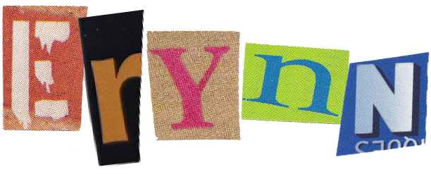

discovers hidden opportunities others miss—and can't help connecting them to the people who need them most.
As an aspiring account executive, she channels this instinct into building bridges between clients, teams, and audiences to create campaigns that connect and amplify diverse voices.
currently
open to work.
most recently
an account management intern at ogilvy ny.
driven by
good coffee, iterative excellence, and giving back to her community.